ppPlot: Probability Plots for various distributions
Source:R/1.3_Distr_DistrCollection_Functions.R
ppPlot.RdFunction ppPlot creates a Probability plot of the values in x including a line.
Usage
ppPlot(
x,
distribution,
confbounds = TRUE,
alpha,
probs,
main,
xlab,
ylab,
xlim,
ylim,
border = "red",
bounds.col = "black",
bounds.lty = 1,
start,
showPlot = TRUE,
axis.y.right = FALSE,
bw.theme = FALSE
)Arguments
- x
Numeric vector containing the sample data for the
ppPlot.- distribution
Character string specifying the distribution of x. The function
ppPlotwill support the following character strings fordistribution:`beta``cauchy``chi-squared``exponential``f``gamma``geometric``log-normal``lognormal``logistic``negative binomial``normal``Poisson``weibull`
By default
distributionis set to`normal`.- confbounds
Logical value: whether to display confidence bounds. Default is
TRUE.- alpha
Numeric value: significance level for confidence bounds, default is `0.05`.
- probs
Vector containing the percentages for the y axis. All the values need to be between `0` and `1`. If `probs` is missing it will be calculated internally.
- main
Character string: title of the plot.
- xlab
Character string: label for the x-axis.
- ylab
Character string: label for the y-axis.
- xlim
Numeric vector of length 2: limits for the x-axis.
- ylim
Numeric vector of length 2: limits for the y-axis.
- border
Character or numeric: color for the border of the line through the quantiles. Default is
`red`.- bounds.col
Character or numeric: color for the confidence bounds lines. Default is
`black`.- bounds.lty
Numeric or character: line type for the confidence bounds lines. This can be specified with either an integer (0-6) or a name:
0: blank
1: solid
2: dashed
3: dotted
4: dotdash
5: longdash
6: twodash
Default is `1` (solid line).
- start
A named list giving the parameters to be fitted with initial values. Must be supplied for some distributions (see Details).
- showPlot
Logical value indicating whether to display the plot. By default,
showPlotis set toTRUE.- axis.y.right
Logical value indicating whether to display the y-axis on the right side. By default,
axis.y.rightis set toFALSE.- bw.theme
Logical value indicating whether to use a black-and-white theme from the
ggplot2package for the plot. By default,bw.themeis set toFALSE.
Value
The function ppPlot returns an invisible list containing:
- x
x coordinates.
- y
y coordinates.
- int
Intercept.
- slope
Slope.
- plot
The generated PP plot.
Details
Distribution fitting is performed using the FitDistr function from this package.
For the computation of the confidence bounds, the variance of the quantiles is estimated using the delta method,
which involves the estimation of the observed Fisher Information matrix as well as the gradient of the CDF of the fitted distribution.
Where possible, those values are replaced by their normal approximation.
Examples
set.seed(123)
ppPlot(rnorm(20, mean=90, sd=5), "normal",alpha=0.30)
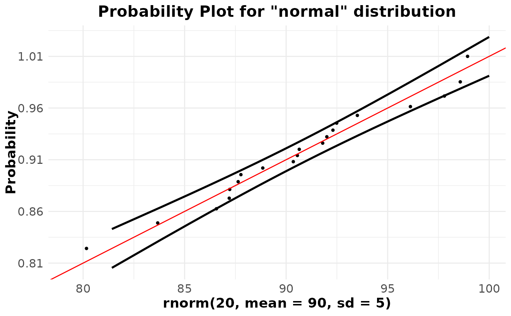
ppPlot(rcauchy(100), "cauchy")
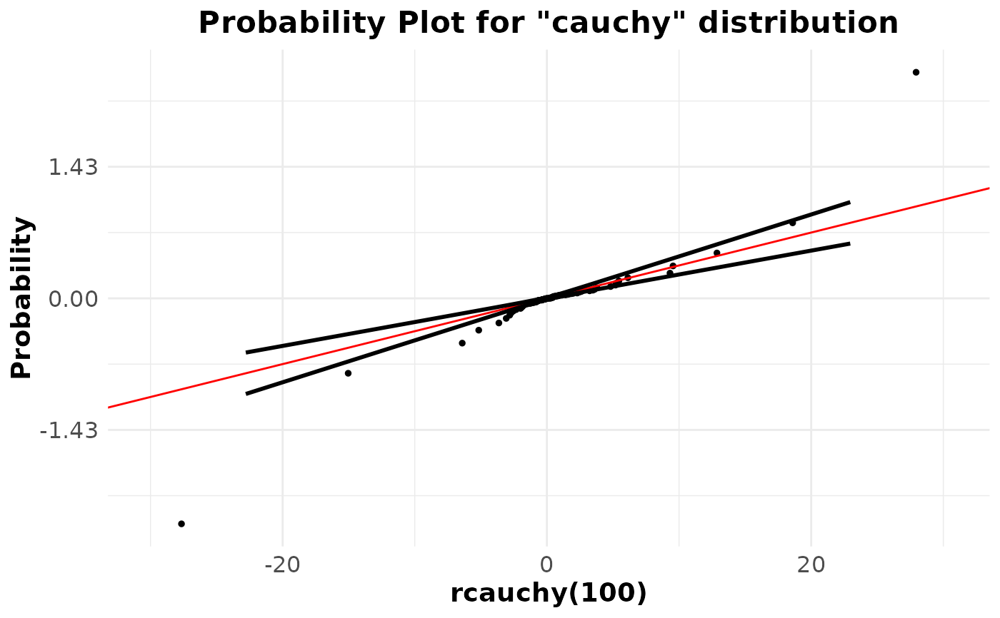
ppPlot(rweibull(50, shape = 1, scale = 1), "weibull")
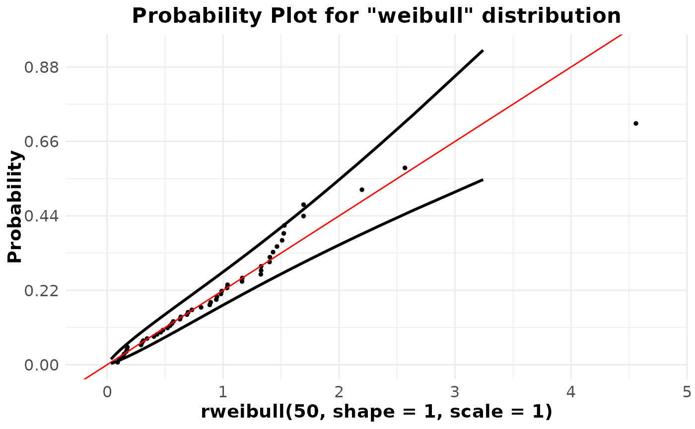
ppPlot(rlogis(50), "logistic")
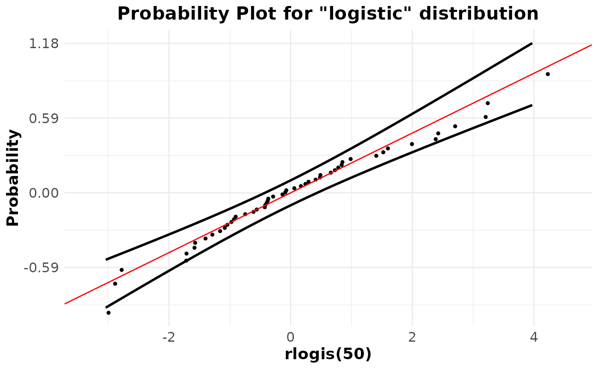
ppPlot(rlnorm(50) , "log-normal")
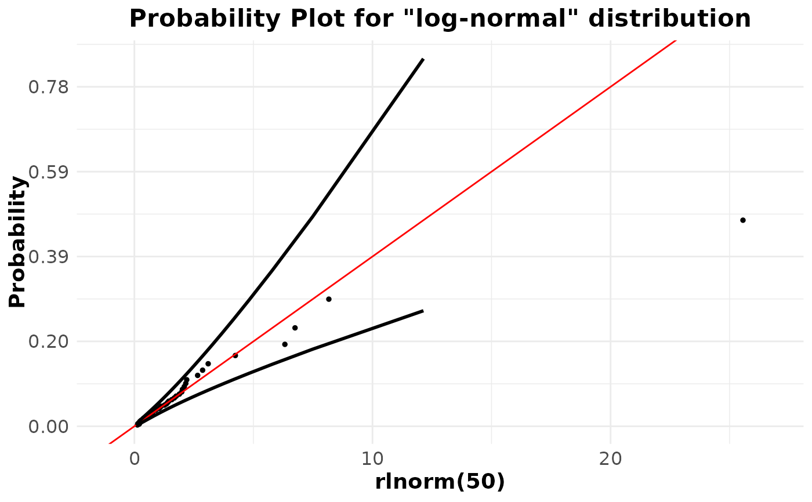
ppPlot(rbeta(10, 0.7, 1.5),"beta")
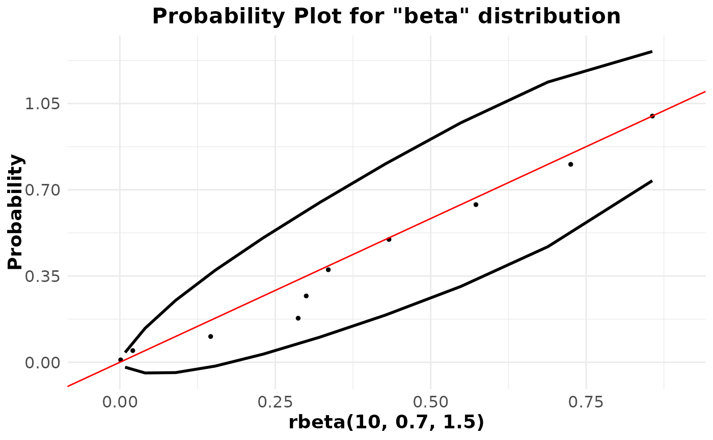
ppPlot(rpois(20,3), "poisson")
ppPlot(rchisq(20, 10),"chi-squared")
ppPlot(rgeom(20, prob = 1/4), "geometric")
ppPlot(rnbinom(n = 20, size = 3, prob = 0.2), "negative binomial")
ppPlot(rf(20, df1 = 10, df2 = 20), "f")
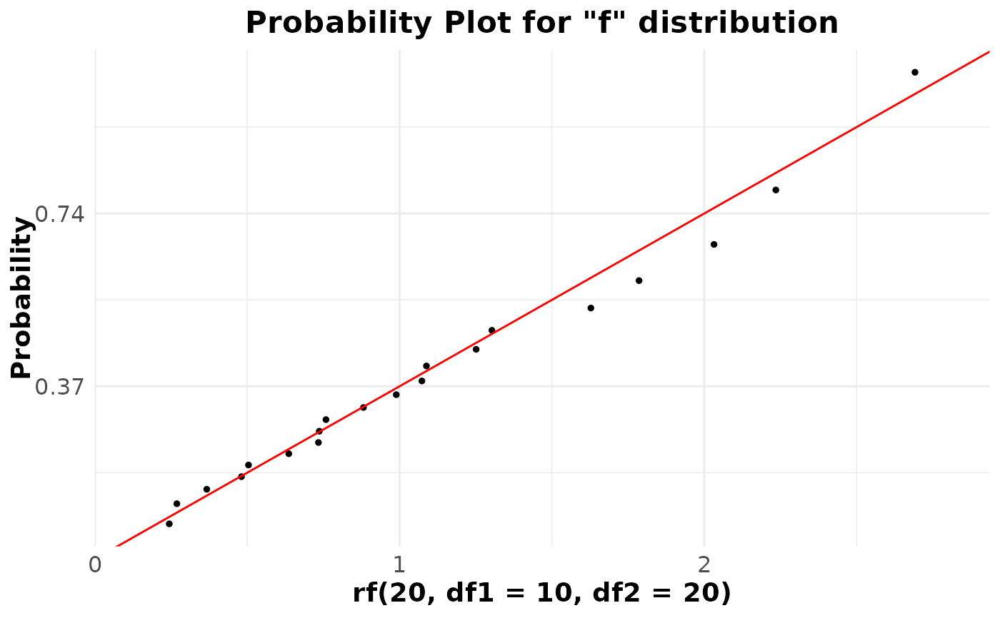